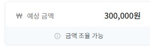
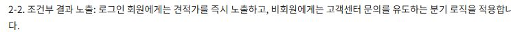
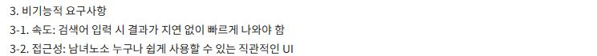
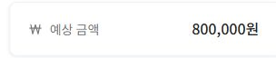
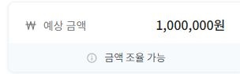
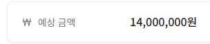
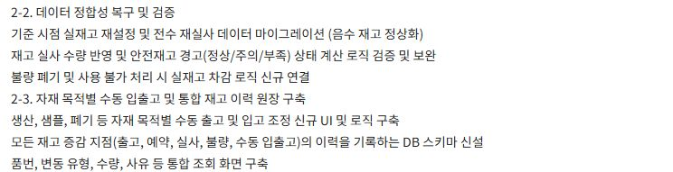
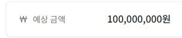

IT경영과 · 실제 시장 사례
작은 기능에서 실제 시스템까지
30만 원부터 1억 원까지
실제 의뢰 9건을 바탕으로 한 수업용 자료입니다. 금액과 요구사항 발췌는 원본이며, 제목은 학습에 필요한 내용만 남긴 요약입니다. 등록·지원·모집 날짜, 국가·지역, 의뢰자·업체·상품의 식별 단서, 원문 링크와 공고 번호는 제외했습니다.
예상 금액은 공고에 적힌 예산이며 실제 계약액은 아닙니다. ‘작업 예상 기간’은 지원 마감 날짜가 아니라 실제 제작에 예상한 기간의 길이입니다. 파란 영역은 강사 해설이며 원문과 구분합니다.
큰 시스템의 요구사항을 살펴보고, 지금 만들어볼 작은 기능을 찾아본 뒤, 같은 유형의 가상 외주를 선택해 제안·제작·납품합니다.
자료 범위: 실제 외주 사례 9건의 수업용 발췌입니다. 가상 외주 선택·제안·제작 실습 본편은 별도로 준비합니다.
사례 01 · 수업용 요약 제목
옵션 견적 계산 기능
30만 원실제 공고의 예상 금액 · 작업 예상 기간 1일
실제 금액 원본 발췌

식별 구간을 제외한 실제 요구사항 발췌

강사 해설 · 수업에서 해볼 핵심옵션별 금액을 계산하는 화면
강사 해설 · 실제 의뢰에 더 필요한 일기존 서비스에 기능 삽입, 회원·비회원 노출 분기, PC·모바일 지원, 소스 납품과 유지보수 논의가 함께 있다.
사례 02 · 수업용 요약 제목
데이터 검색 앱
50만 원실제 공고의 예상 금액 · 작업 예상 기간 2일
실제 금액 원본 발췌

식별 구간을 제외한 실제 요구사항 발췌

강사 해설 · 수업에서 해볼 핵심준비된 단어표에서 검색하고 결과 표시
강사 해설 · 실제 의뢰에 더 필요한 일제공된 실제 자료, Android·iOS 앱 납품, 데이터 관리 방법까지 요구한다.
사례 03 · 수업용 요약 제목
발주 데이터 변환 자동화
80만 원실제 공고의 예상 금액 · 작업 예상 기간 5일
실제 금액 원본 발췌

식별 구간을 제외한 실제 요구사항 발췌
강사 해설 · 수업에서 해볼 핵심사이즈 조건에 따라 옵션 코드를 자동 변환
강사 해설 · 실제 의뢰에 더 필요한 일실제 발주서 형식 보존, 여러 상품 코드, 정보 누락 처리, VBA 실행 환경과 사용 안내가 필요하다.
사례 04 · 수업용 요약 제목
홍보 페이지 제작
100만 원실제 공고의 예상 금액 · 작업 예상 기간 7일
실제 금액 원본 발췌

식별 구간을 제외한 실제 요구사항 발췌
강사 해설 · 수업에서 해볼 핵심제공 원고로 반응형 소개 페이지 만들기
강사 해설 · 실제 의뢰에 더 필요한 일브랜드용·제조사용 2개 페이지, CTA 동작, 디자인 파일과 원본 소스 납품을 요구한다.
사례 05 · 수업용 요약 제목
발주·송장 업무 자동화
900만 원실제 공고의 예상 금액 · 작업 예상 기간 45일
실제 금액 원본 발췌

식별 구간을 제외한 실제 요구사항 발췌

강사 해설 · 수업에서 해볼 핵심주문 목록을 기준별로 분류하고 결과 출력
강사 해설 · 실제 의뢰에 더 필요한 일주문·상품·제조사 DB, 여러 엑셀 양식, 이메일 발송과 실패 재처리, 송장 변환, 배포·운영이 연결된다.
사례 06 · 수업용 요약 제목
재고 데이터·처리 로직 개선
1,400만 원실제 공고의 예상 금액 · 작업 예상 기간 60일
실제 금액 원본 발췌

식별 구간을 제외한 실제 요구사항 발췌

강사 해설 · 수업에서 해볼 핵심판매 한 건의 재고 차감·기록 확인
강사 해설 · 실제 의뢰에 더 필요한 일여러 출고 경로의 중복 차감 방지, 과거 음수 재고 복구, 동시 요청 처리, 운영 데이터 보호와 통합 QA가 필요하다.
사례 07 · 수업용 요약 제목
다중 매장 판매·재고 시스템
3,000만 원실제 공고의 예상 금액 · 작업 예상 기간 80일
실제 금액 원본 발췌

식별 구간을 제외한 실제 요구사항 발췌
강사 해설 · 수업에서 해볼 핵심한 가게의 판매·재고·매출 흐름 이해
강사 해설 · 실제 의뢰에 더 필요한 일여러 매장, 관리자·매장별 권한, 기존 기능 분석과 이관, 서버·DB, 정산·통계·운영 문서가 필요하다.
사례 08 · 수업용 요약 제목
부서 통합 업무 시스템
5,000만 원실제 공고의 예상 금액 · 작업 예상 기간 180일
실제 금액 원본 발췌

식별 구간을 제외한 실제 요구사항 발췌

강사 해설 · 수업에서 해볼 핵심판매 데이터를 표·집계로 다루기
강사 해설 · 실제 의뢰에 더 필요한 일판매·급여·결재·영업·수익분석·물류·무역 업무를 연결하며 사용자 권한과 기존 ERP 연계를 다룬다.
사례 09 · 수업용 요약 제목
무인 판매 장치 결제·제어 시스템
1억 원실제 공고의 예상 금액 · 작업 예상 기간 150일
실제 금액 원본 발췌

식별 구간을 제외한 실제 요구사항 발췌

강사 해설 · 수업에서 해볼 핵심판매 성공에 따른 재고·상태 변화 이해
강사 해설 · 실제 의뢰에 더 필요한 일QR 결제, 관리 서버·대시보드, 기기 명령 검증, ESP32 펌웨어·회로·PCB, 현장 운영 시험까지 포함한다.